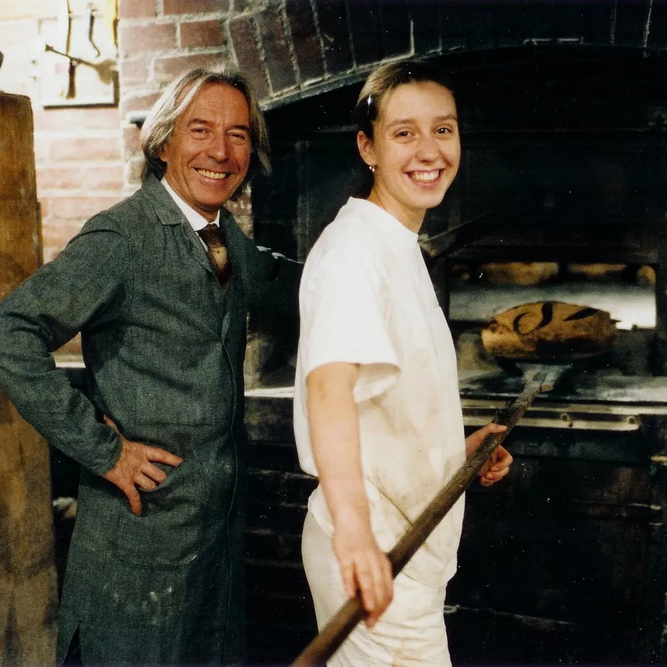

Our History
Founded in 1932 by baker Pierre Poilâne, Poilâne® has stood the test of time by preserving the best of the best. 3 generations, Pierre, Lionel, Apollonia have succeeded each other with the same exigence, to offer handmade breads, sablés and bakers pastries baked in wood-fired ovens. These are authentic, nourishing, and nutritious baked goods with a unique taste.

Located at 8 Rue du Cherche-Midi in the 6th arrondissement of Paris, the original Poilâne ® bakery, created in 1932, is the nerve center of the internationally renowned company.
It is by staying true to its original intention - to make high quality bread for everyone - and by combining art de vivre , eating well and creativity, that Poilâne® has developed its offerings featuring its savoir-faire well beyond Saint-Germain-des-Prés, extending throughout France and all over the world.
Today, Poilâne® serves you all over the world thanks to a 24-hour shipping service and welcomes you in its 5 stores in Paris and London.
Our Products
Made from ingredients selected for their quality, both in terms of respect for the environment but also for their taste and nutritional values, Poilâne® products remain faithful to baking traditions while also meeting Poilâne®’s standards for their composition and environmental impact.
Convinced that the quality of a product is intrinsically dependent on the savoir-faire of the baker who makes it, Poilâne® baked goods are made by hand by our compagnons-boulangers who train for a minimum of nine months with an experienced master baker who is committed to transmitting the savoir-faire necessary to accomplish their job. Learning the gestures, an understanding of the fermentation process and how to work the dough, the baking with wood fired oven, using all 5 senses as the best tools are amongst of the broad themes which comprise this training.